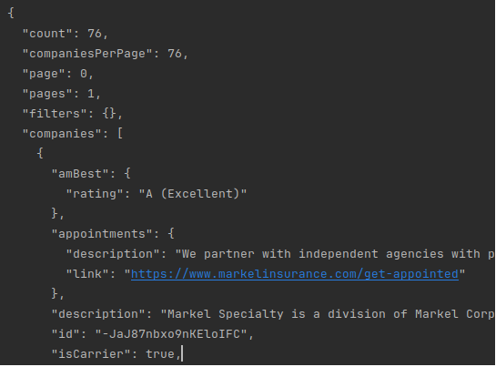
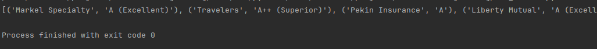
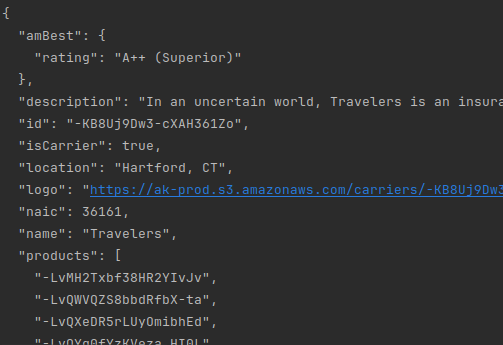

Imagine you are an insurance agency and want your clients and prospective clients to see a list of potential carriers along with their respective credit rating (an indication that they will actually pay a claim that you file with them).
You have choices! You could look up each carrier, one by one, and record their A.M. Best credit rating, and update your website with this information. Theoretically, the information would remain relatively static, but you would have to perform this lookup and update activity at least once per month. Then, you could update your website with this information in the HTML code, or, if you were technically savvy, update a spreadsheet
OR ...with a few lines of code, have a script that will perform this lookup for you automatically using the Ask Kodiak API.
Ask Kodiak is an information aggregator that collects data that is unique and necessary to the insurance world. It partners with many insurance carriers to collect the specific coverages, limits, market appetite and other information unique to each carrier. That information is then categorized and presented through their website and through a set of APIs, allowing developers to request and retrieve that information for customized presentation through their own websites and/or applications.
To write the method, we will use two packages; requests and json. JSON will be used to convert the Python data dictionary to and from a json request and the requests module will be used to complete the http call and handle the authentication.
Before you can call the API, your agency must be approved. This is a free service for agencies, and you simply need to register on their website. Once you've registered, you need to request access to their API, which is a form request from their website. After signing up and in to the website, click on your agency's profile in the top-right corner, next to your user's avatar. Within the agency profile, navigate to the "API Keys" section of the left nav panel. From there you can request access to the APIs, which usually takes an hour or so. Once you have your API key, you need to note this key and the Group ID for your agency, which is required for all of your API calls (see below).
Referring to the Ask Kodiak documentation , I want to write a function that will give me a list of carriers and wholesalers that are available from their service. This is accomplished by calling their /companies method without passing any URL parameters (i.e. show me everything!)
Running this code will give you something like the following:

Now that we can retrieve all companies, let's filter for just Carriers, where you need only modify the URL parameters to pass "?companyType=carrier" to the API.
This returns a list of 44 carriers.
We can now modify the method to show the carrier name and their A.M. Best credit rating:

OK, so what?!? Well, now we need to get a list of products from our carriers. Let's use Traveler's as an example to get their list of products and display the details accordingly.
From the above call, I can retrieve the GroupID for Travelers and pass this in my code. For code simplicity, I am going to hard-code the GroupID, but can pass these dynamically using the above logic as well. So with a slight modification to the previous method, we can retrieve just Traveler's information:

Now, we have our desired company's profile, from which we can retrieve each of the products that are offered by that company. These are listed in the company dictionary key "products", which is a list. We need to iterate through that list to make an individual Ask Kodiak call for each of the products and return some meaningful results.
With a small change to the code, we can change the single, hard-coded product ID into an iterated call for each of the product IDs. Now that I have written several methods that essentially do the same thing, but pass a set of params to a different endpoint, it's time to standardize the API call to Ask Kodiak:
There! With a few lines of code, we can retrieve a company's profile, the information related to it (phone numbers, website, address, credit rating, states of operation, etc.), and the products that they offer, including URLs to download their marketing material!!!
This is a simple, yet practical application illustrating the power of API calls across the internet. As more companies offer these APIs, the agency's ability to retrieve and present relevant information will become easier.